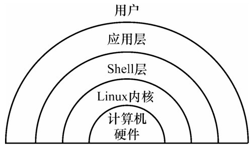
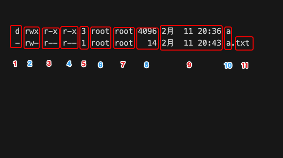

前言
不渴望能够一跃千里，只希望每天能够前进一步。
操作系统简史
四个时代
第一个时代是OS时代，这个时候操作系统才刚刚成型，最早是1973年由贝尔实验室开发的UNIX系统，以及1982年与1991年在UNIX系统基础上进行扩展定制的若干变种。
第二个时代是PC时代，PC时代崛起于1975年，当年乔布斯开发了Apple系统，随后1980年，比尔盖茨开发了DOS系统，从这时起更多的人开始接触操作系统，个人计算机得以普及。
第三个时代是GUI时代，GUI时代的代表作是1979年乔布斯开发的Mac系统与1990年比尔盖茨开发的Windows系统，以及1994年的Linux系统，这三个系统影响了整个时代，一直到现在仍被广泛使用。
第四个时代是移动OS时代，随着移动互联网的发展，移动OS也变得越来越重要，在移动OS时代，最知名的是Google的Android系统，以及乔布斯的iOS系统。
Shell是什么

Shell是用户与内核交互操作的接口，它接收用户的命令然后传递给内核，内核执行命令并将执行结果通过Shell返回给用户。
Shell既是一种命令解释器，也是一种编程语言。Shell有很多种版本，主要的版本如下：
Bourne Shell，源于UNIX早期版本的Shell。
Bash，又名Bourne Again Shell，来自GUN项目，它是Linux主要的Shell。
Korn Shell，它是对Bourne Shell的发展。
C shell，是SUN公司Shell的BSD版本。
Bash是什么
Bash是Shell的一种，在Linux中常用的Shell就是Bourne-Again shell（简称bash）。
Bash有很灵活和强大的编程接口，同时又有很友好的用户界面。
Bash的特点：
•命令历史、命令补全
•管道、重定向
•命令别名
•命令行编辑
•命令行展开
•文件名通配
•变量
•编程
常用命令
文件系统管理命令
对文件及目录的管理操作包括新建、浏览、编辑、修改、删除等。
ls命令
ls命令：显示文件信息命令
功能：ls命令显示关于文件的信息，其中的文件包括任何类型的文件和目录。
用法1：ls
[root@TheAnswer test]# ls
a a.txttest文件夹下使用ls命令可以看到有一个a文件夹和一个a.txt文件
用法2：ls -l
该命令显示文件或者目录下的文件的详细信息，包括文件类型及权限、连接数、文件所有者及所有者所属的组、文件大小、访问日期、时间、名称。
[root@TheAnswer test]# ls -l
总用量 8
drwxr-xr-x 3 root root 4096 2月 11 20:36 a
-rw-r--r-- 1 root root 14 2月 11 20:43 a.txt小提示：每一列的含义

”标号1“：
| - | d | p | l | b | c | s |
|---|---|---|---|---|---|---|
| 普通文件 | 目录文件 | 管理文件 | 链接文件 | 块设备文件 | 字符设备文件 | 套接字文件 |
”标号2“：所有者/所有者权限
”标号3“：组用户权限（一个组中除所有者拥有的权限）
”标号4“：其他用户权限（除当前所有者的组，其他组的权限）
文件权限
| r | w | x | - |
|---|---|---|---|
| 读权限 | 写权限 | 可执行权限 | 无权限 |
”标号5“：如果是普通文件则为连接数,如果是目录文件则为第一级子目录数
”标号6“：用户名
”标号7“：组名
”标号8“：表示文件大小，单位为字节
”标号9“：表示最后修改时间
”标号10“：文件名
”标号11“：文件后缀
用法3：ls -l [文件包含的字符]*
test目录下文件如下 a，a123，a.txt，bcd，下面使用ls -l a* 这个命令。
[root@TheAnswer test]# ls -l
总用量 16
drwxr-xr-x 3 root root 4096 2月 11 20:36 a
drwxr-xr-x 2 root root 4096 2月 11 18:05 a123
-rw-r--r-- 1 root root 14 2月 11 17:43 a.txt
drwxr-xr-x 2 root root 4096 2月 11 18:05 bcdls -l a* 该命令是显示当前目录下以a开头的文件或目录的详细信息。*是文件名称的匹配符，表示可以匹配任意字符串。
[root@TheAnswer test]# ls -l a*
-rw-r--r-- 1 root root 14 2月 11 17:43 a.txt
a:
总用量 4
drwxr-xr-x 3 root root 4096 2月 11 20:39 b
a123:
总用量 0用法4：ls -a 、ls -al
ls -a 会把隐藏文件显示出来，如果要想看到文件的信息的话就可以使用 ls -al。
[root@TheAnswer test]# ls -a
. .. a a123 .abc.txt a.txt bcd
[root@TheAnswer test]# ls -al
总用量 24
drwxr-xr-x 5 root root 4096 2月 11 18:31 .
dr-xr-x---. 8 root root 4096 2月 11 17:12 ..
drwxr-xr-x 3 root root 4096 2月 11 20:36 a
drwxr-xr-x 2 root root 4096 2月 11 18:05 a123
-rw-r--r-- 1 root root 0 2月 11 18:31 .abc.txt
-rw-r--r-- 1 root root 14 2月 11 17:43 a.txt
drwxr-xr-x 2 root root 4096 2月 11 18:05 bcdpwd命令
pwd命令：显示用户当前工作目录，
功能：显示当前目录在文件系统层次中的位置。
用法：pwd
先进入到一个工作目录下
[root@TheAnswer ~]# cd test/a
[root@TheAnswer a]#然后输入pwd
[root@TheAnswer ~]# cd test/a
[root@TheAnswer a]#[root@TheAnswer a]# pwd
/root/test/a目录管理命令-mkdir/rmdir
语法：
mkdir[参数] 目录名称
rmdir[参数] 目录名称
功能：创建目录和删除目录。mkdir命令表示在当前目录中建立一个新目录，rmdir表示删除指定的目录。
-p表示递归删除或者创建目录。
用法：mkdir/rmdir -p 目录
当前目录创建目录/删除目录
[root@TheAnswer ~]# cd test/a
[root@TheAnswer a]#
[root@TheAnswer test]# ls
a a123 a.txt bcd
[root@TheAnswer test]# mkdir test1
[root@TheAnswer test]# ls
a a123 a.txt bcd test1
[root@TheAnswer test]# rmdir test1
[root@TheAnswer test]# ls
a a123 a.txt bcd递归创建/删除目录
[root@TheAnswer test]# mkdir -p test1/test2/test3
[root@TheAnswer test]# cd test1/test2/test3
[root@TheAnswer test3]# pwd
/root/test/test1/test2/test3
[root@TheAnswer test]# rmdir -p test1/test2/test3
[root@TheAnswer test]# ls
a a123 a.txt bcd删除文件工具-rm
语法：
rm[参数] file1 file2 ……
rm[参数] dir1 dir2 dir ……
功能：rm用来删除一个或多个文件的工具。并且可以用于删除非空目录。
也可以使用参数-rf强制删除一个非空目录。
参数：-f 表示不显示警告或提示直接删除。-i 表示删除文件时显示警告信息并提示是否删除。-r或-R表示可以递归删除整个目录包括子目录及目录下的所有文件。
用法：rm -i file
删除文件
先用touch b.txt 创建一个文件
[root@TheAnswer test]# touch b.txt
[root@TheAnswer test]# ls
a a123 a.txt bcd b.txt
[root@TheAnswer test]# rm -i b.txt
rm：是否删除普通空文件 "b.txt"？y
[root@TheAnswer test]# ls
a a123 a.txt bcd用法：rm -ir dir
删除目录及所有下级目录和文件
先用touch b.txt 创建一个文件
[root@TheAnswer test]# ls
a a123 a.txt bcd
[root@TheAnswer test]# rmdir a
rmdir: 删除 "a" 失败: 目录非空
[root@TheAnswer test]# rm -ir a
rm：是否进入目录"a"? y
rm：是否进入目录"a/b"? y
rm：是否进入目录"a/b/c"? y
rm：是否进入目录"a/b/c/d"? y
rm：是否进入目录"a/b/c/d/e"? y
rm：是否删除普通空文件 "a/b/c/d/e/e.txt"？y
rm：是否删除目录 "a/b/c/d/e"？y
rm：是否删除目录 "a/b/c/d"？y
rm：是否删除目录 "a/b/c"？y
rm：是否删除目录 "a/b"？y
rm：是否删除目录 "a"？y用法：rm -rf dir
不需要提示删除目录及所有下级目录和文件
文件名修改命令-mv
语法：
mv 原文件名或目录名新文件名或目录名
功能：文件更名或搬移。
用法：mv filename1 filename2
将名称为filename1的文件改名为filename2并删除原文件。
[root@TheAnswer test]# ls
a123 a.txt bcd
[root@TheAnswer test]# mv a.txt abcd.txt
[root@TheAnswer test]# ls
a123 abcd.txt bcd
[root@TheAnswer test]#用法：mv filename1 path/filename2
将名称为filename1的文件移动到path路径下并改名为filename2并删除原文件。
[root@izbp14yziiuvu2qh2n015xz test]# ls
a123 a.txt bcd
[root@izbp14yziiuvu2qh2n015xz test]# mv a.txt abcd.txt
[root@izbp14yziiuvu2qh2n015xz test]# ls
a123 abcd.txt bcd
[root@izbp14yziiuvu2qh2n015xz test]# ls
a123 abcd.txt bcd
[root@izbp14yziiuvu2qh2n015xz test]# mv abcd.txt bcd/bcd.txt
[root@izbp14yziiuvu2qh2n015xz test]# ls
a123 bcd
[root@izbp14yziiuvu2qh2n015xz test]# cd bcd
[root@izbp14yziiuvu2qh2n015xz bcd]# ls
bcd.txtshell
比较运算符
| -eq | -ne | -gt | -lt | ge | le |
|---|---|---|---|---|---|
| 等于 | 不等于 | 大于 | 小于 | 大于等于 | 小于等于 |
函数
函数语法
[function] name(){函数体}[重定向]
其中function关键字和重定向是可选的
函数使用
name 参数列表
写一个max函数返回3个参数中的最大值
#!/bin/bash
function max( )
{
echo $# $1 $2 $3
if [ $# -ne 3 ];then
echo "usage:max p1 p2 p3"
exit 1
fi
max=$1
if [ max -lt $2 ];then
max=$2
fi
if [ max -lt $3 ];then
max=$3
fi
return max
}
max 1 2 3
echo "the max number of 1 2 3 is : $?"
exit
执行上面程序报错
./max.sh: 第 11 行:[: max: 期待整数表达式
./max.sh: 第 14 行:[: max: 期待整数表达式
./max.sh: 第 17 行:return: max: 需要数字参数
the max number of 1 2 3 is : 255可能是max 有歧义 用 ${max} 或者 $max 代替max成功了
#!/bin/bash
function max( )
{
echo $# $1 $2 $3
if [ $# -ne 3 ];then
echo "usage:max p1 p2 p3"
exit 1
fi
max=$1
if [ ${max} -lt $2 ];then
max=$2
fi
if [ ${max} -lt $3 ];then
max=$3
fi
return ${max}
}
max 1 2 3
echo "the max number of 1 2 3 is : $?"
exit结果
the max number of 1 2 3 is : 3$?
获取上一个命令的退出状态
#!/bin/bash
function max( )
{
if [ $# -ne 3 ];then
echo "usage:max p1 p2 p3"
exit 1
fi
max=$1
if [ $max -lt $2 ];then
max=$2
fi
if [ ${max} -lt $3 ];then
max=$3
fi
return ${max}
}
max 1 2 28 4
echo "the max number is : $?"
exitmax.sh中max方法传进去4个参数，这个时候会退出脚本且状态为1
[root@izbp14yziiuvu2qh2n015xz test]# echo $?
1获取函数的返回值
#!/bin/bash
function max( )
{
if [ $# -ne 3 ];then
echo "usage:max p1 p2 p3"
exit 1
fi
max=$1
if [ $max -lt $2 ];then
max=$2
fi
if [ ${max} -lt $3 ];then
max=$3
fi
return ${max}
}
max 1 2 28
echo "the max number is : $?"
exit结果
the max number is : 28把最大值得参数改为255
结果
the max number is : 255把最大值得参数改为256
the max number is : 0这个是后$？获取值是0
$?获取的返回值是0~255之前，超过255开始从0计算 也就是说 256 输出 0，257输出1，258输出2
怎么获取返回值？
用全局变量来获取
$max
注：在 Shell 函数中定义的变量默认也是全局变量，它和在函数外部定义变量拥有一样的效果